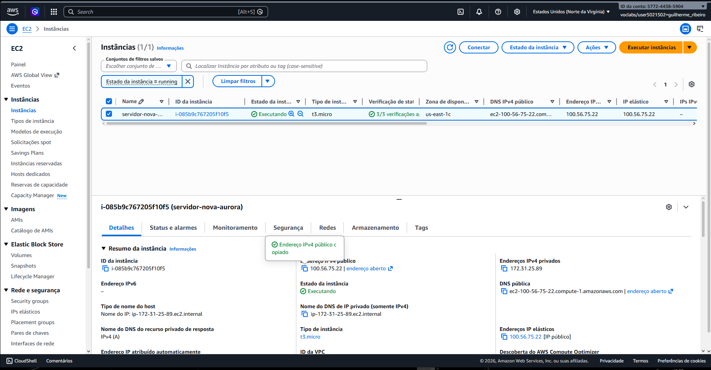

Objetivos acadêmicos e profissionais
Conclusão do curso de DSM na FATEC, consolidação da atuação em desenvolvimento de software back-end e evolução para soluções completas que integrem dados, APIs e infraestrutura.
 (1).png)
Desenvolvedor de Software Multiplataforma
CAMPOS RIBEIRO
Lógica, arquitetura e interfaces transformadas em soluções práticas.
 (1).jpg)
SOFTWARE × HARDWARE × CRIATIVIDADE
01 / SOBRE
“Não construo apenas interfaces. Construo a lógica que faz elas funcionarem.”
Sou um desenvolvedor em formação, focado em transformar ideias complexas em soluções de software práticas, organizadas e altamente funcionais. Minha formação em Eletrônica Industrial no CTIG/UNESP me deu uma visão que conecta software e hardware.
Possuo maior afinidade com back-end: lógica estruturada, manipulação eficiente de dados e sistemas robustos e escaláveis. Atualmente, expando minhas competências na FATEC por meio de projetos colaborativos com Git/GitHub e metodologias ágeis.
Conclusão do curso de DSM na FATEC, consolidação da atuação em desenvolvimento de software back-end e evolução para soluções completas que integrem dados, APIs e infraestrutura.
Desenvolvimento back-end, APIs REST, bancos de dados, infraestrutura com Docker/AWS e integração entre software e hardware.
02 / PROJETOS
Plataforma de logística reversa para rastrear equipamentos eletrônicos e sua cadeia de triagem, desmonte e recuperação.
AtuaçãoArquitetura e desenvolvimento do CLI e da API Fastify, com autenticação JWT, Prisma/PostgreSQL, analytics e relatórios assíncronos.
ProblemaOrganizações geradoras de resíduos eletrônicos precisam rastrear equipamentos, lotes e operações de triagem, desmonte e recuperação em uma cadeia operacional auditável.
Hard skillsArquitetura em camadas, APIs REST, autenticação JWT, Prisma, PostgreSQL, Docker, testes automatizados e processamento assíncrono.
Soft skillsPlanejamento técnico, organização da implementação e documentação de decisões arquiteturais.

Sistema web para inscrições acadêmicas e cadastro de candidatos em diferentes cursos, com persistência em banco de dados.
AtuaçãoDesenvolvimento back-end com Flask e MySQL, conteinerização com Docker Compose e implantação em instância AWS EC2.
Plataforma para centralizar e democratizar o acesso a dados públicos sobre a atuação de deputados, auxiliando o voto consciente.
AtuaçãoResponsável pela lógica back-end, organização e tratamento de dados com Pandas e estrutura modular de rotas Flask.
Empresa parceiraFATEC São José dos Campos — desafio validado pelo professor Fernando Masanori como parceiro do projeto.
ProblemaDados públicos sobre presença, gastos e atividades parlamentares são dispersos e técnicos, dificultando que eleitores avaliem candidatos à reeleição.
SoluçãoAplicação web com dados da API da Câmara organizados em filtros, resumos, gráficos e informações educativas em linguagem acessível.
Hard skillsPython, Flask, Pandas, integração com API pública, Docker, MariaDB, AWS e organização de dados.
Soft skillsTrabalho em equipe, Scrum, comunicação com o parceiro, organização por sprints e colaboração com Git/GitHub.
Portal educacional que simula serviços, fluxos informativos e a identidade visual de uma instituição de ensino.
AtuaçãoConstrução da interface responsiva e das páginas de serviços, informações e identidade visual da instituição.
Desenvolvimento de sistemas integrados de controle e monitoramento eletrônico durante a formação técnica integrada de nível médio.
AtuaçãoParticipação no desenvolvimento e integração de sistemas eletrônicos, com foco em controle, monitoramento e aplicação prática de circuitos.
Modernização da plataforma universitária com foco em persistência de dados e infraestrutura escalável em ambiente de produção.
AtuaçãoModernização da aplicação e apoio à integração com banco de dados, Docker e infraestrutura AWS.
Portfólio responsivo para apresentar trajetória, competências e projetos com suporte a vários idiomas.
AtuaçãoCriação da interface responsiva, alternância de tema e suporte multilíngue com JavaScript.
Atividade profissional de estágio relacionada à preparação e conferência de componentes destinados a kits educacionais de eletrônica.
AtuaçãoManipulação e organização de componentes, aplicação de conhecimentos de eletrônica industrial e apoio à montagem de materiais didáticos.
Hard skillsEletrônica industrial, interpretação de componentes, organização de materiais e conferência técnica.
Soft skillsResponsabilidade, atenção a detalhes, organização e precisão nas atividades.
03 / COMPETÊNCIAS
HARD SKILLS
SOFT SKILLS
01Trabalho em equipe e agilidadeExperiência com Git compartilhado e metodologias ágeis, como Scrum e Kanban.
02Pensamento analítico e lógicoFacilidade com modelagem de dados e arquitetura para resolver fluxos complexos de back-end.
03Visão multidisciplinar hardware/softwareA formação em eletrônica fortaleceu o diagnóstico de problemas físicos e de código.
04Aprendizado contínuoEstudo proativo de linguagens, ferramentas de dados e infraestrutura.
04 / TRAJETÓRIA
FATEC — Primeiro Semestre
FATEC / UNESP — Integração acadêmica em inovação tecnológica, ferramentas de desenvolvimento e metodologias de mercado.
CTIG — UNESP
05 / CONTATO
Disponível para propostas de estágio e projetos colaborativos.
guilhermeribeiro.hcr@gmail.com ↗